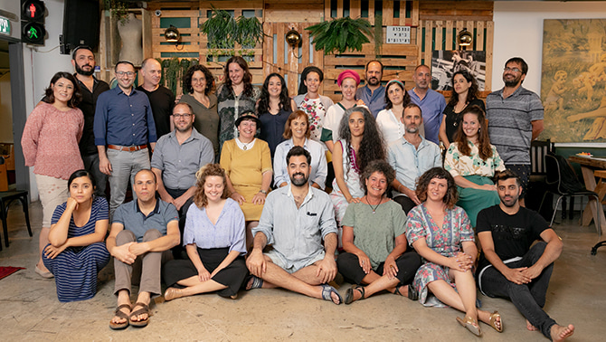
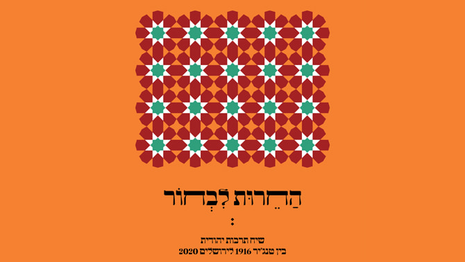
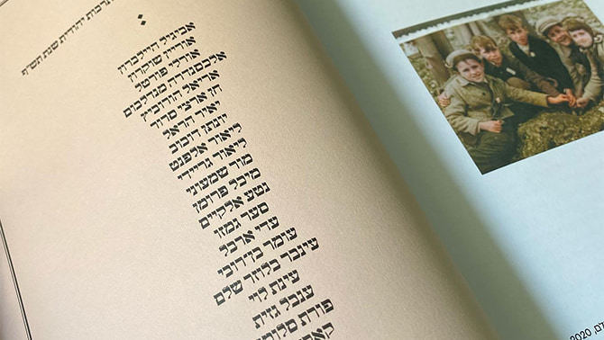
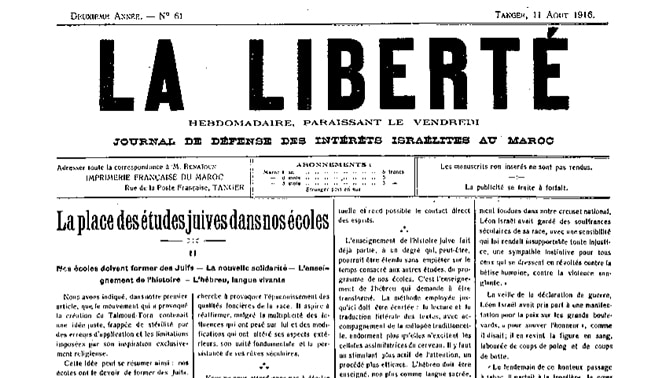
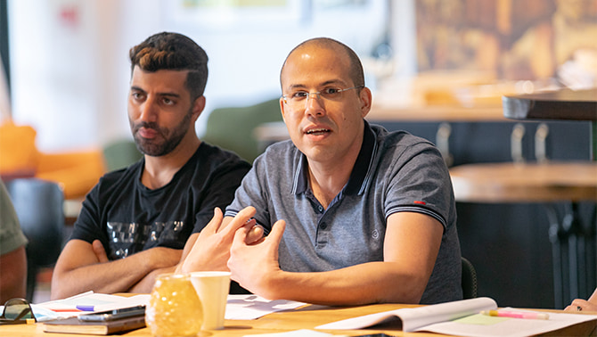
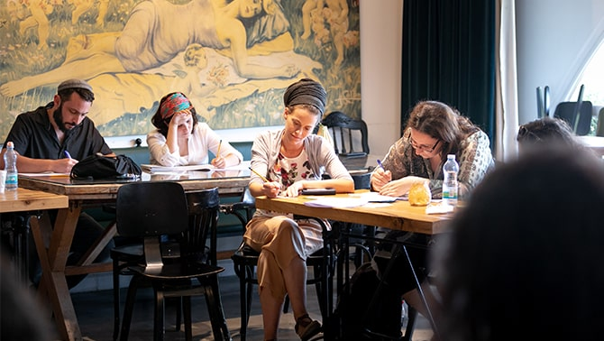

התרבות היהודית היא מוקד של אינסוף פולמוסים, מחלוקות ופוליטיזציה בישראל. מיהו יהודי? מה יהודים צריכים לעשות - או לא לעשות? מי צריך להחליט החלטות עבור העם היהודי? תשובות מתחרות לשאלות אלו גרמו לערים להתפצל, למחאות להתפרץ ולממשלות ליפול.
ואולם, התרבות הישראלית היהודית היא גם כוח יצירתי רב עוצמה, שב-72 שנות קיומה הקצרות של מדינת ישראל הוליד מערך ייחודי של חגים, טקסים וטקסטים, מוסדות ויצירות. למרות השסעים והאתגרים החברתיים והפוליטיים, התרבות היהודית בישראל היא זירה חיונית ותוססת – רנסנס של מסורות יהודיות עתיקות השזורות בחידושים מודרניים אוונגרדיים. מקומם הבולט של האמנות והמוזיקה, הטלוויזיה והקולנוע הישראלי – ולאחרונה גם של המטבח הישראלי – בזירת התרבות העולמית, הוא עדות לחיוניות זו.
האם התסיסה והיצירתיות של התרבות הישראלית היהודית יכולות לשמש מזור לשסעים החברתיים בחברה הישראלית והיהודית? זה מה שתוכנית מנדל למנהיגות בתרבות יהודית מבקשת לעשות. מדי שנה היא מכנסת כ-20 מנהיגי תרבות חדשניים ופורצי דרך מכל גוני החברה היהודית בישראל, ומעניקה להם הזדמנות להעמיק את הידע שלהם, להרחיב את נקודות המבט ואת הרישות שלהם בשדה התרבות, להתמקצע ביכולותיהם וליצור חזון עשיר למנהיגותם התרבותית – ולתפקידה בקידום החברה הישראלית.

מחזור ג' של תוכנית מנדל למנהיגות בתרבות יהודית – בוגרים וחברי סגל
החירות לבחור
איזו תרבות יהודית ואיזו זהות יהודית ינחילו יהודים בישראל לילדיהם? במשך עשרות שנים התנהלו בישראל ויכוחים סוערים בשאלה איזו תרבות יהודית יש לכלול בחינוך הדור הצעיר שלה. באחרונה סערה הארץ על מה שנראה לחלקים בחברה כשילוב מתרחב והולך של תכנים יהודיים בתוכניות הלימודים בבתי ספר שאינם דתיים, בעוד אחרים מצרים על אי-היכרות מספקת עם התכנים היהודיים בבתי הספר בישראל.
 עטיפת האסופה "החרות לבחור" – אסופת מאמרים ויצירות של עמיתי התוכנית ובוגריה
איזו תרבות יהודית עלינו להקנות לילדינו? בתוכנית מנדל למנהיגות בתרבות יהודית אנו מבקשים להעשיר את הוויכוח הזה על-ידי פנייה לרגעים בהיסטוריה היהודית שבהם עלו שאלות אלו: מימי התלמוד, דרך דיונים יהודיים על נאורות במאה ה-18, ועד לדיונים על תרבות עברית ברחובות תל אביב הצעירה. באחד הקורסים של מחזור ג' (תש״ף) בתוכנית, עיון בפולמוס כזה הוליד אסופת מאמרים מקוונת ייחודית בשם "החירות לבחור", החוקרת את התרבות היהודית מירושלים של שנת 2020 ועד טנג'יר של 1916 ובחזרה, ובה מאמרים מאת חברי סגל התוכנית ועמיתיה, בעריכת חבר סגל התכנית,
ד"ר דוד גדג'.
 מבט פנימה: עמיתי מחזור ג' מתוך "החירות לבחור"
בין העמודים שנשכחו זה מכבר של העיתון הצרפתי La Liberté, שפורסם בטנג'יר בשנים 1922-1915, נותרו שרידים טקסטואליים של ויכוח סוער על אופי התרבות היהודית בבתי הספר היהודיים במרוקו. במשך שנה טלטלו את העיתון מאמרי דעה הדוגלים בגישות שונות: מתפיסה אוניברסלית של היהדות – בניגוד להשקפה המסורתית, דרך השקפה יהודית ״אינטגרלית״ המשלבת דת ולאומיות, ועד תמיכה בגישה דתית יותר. מחברי המאמרים התגוררו במרוקו אך נעו בינה לבין ניו יורק, ארגנטינה, אלג'יריה, וצרפת – וכולם כתבו לעיתון הטנג׳יראי.
 העיתון הצרפתי La Liberté שיצא לאור בטנג'יר בשנים 1922-1915
המאמרים תורגמו מן המקור הצרפתי לעברית בפעם הראשונה עבור קורס שלימד חבר סגל מנדל ד"ר דוד גדג' במסגרת תוכנית מנדל למנהיגות בתרבות יהודית, ויצרו תהודה עמוקה בקרב עמיתי התוכנית. הם מצאו עניין רב באתגרים העכשוויים שנמצאו במאמרים בני מאה שנה אלו. סגנון הוויכוח במאמרים מכובד, והם נטועים בסביבה הייחודית של המודרניות הצפון-אפריקאית, המשלבת תרבות יהודית ערבית, וצרפתית בחיי הקהילה היהודית. העובדה שדיונים דומים שהתקיימו באירופה, בארצות הברית ובישראל היו מוכרים היטב, ואילו דיונים שהתנהלו בארצות מוסלמיות נשכחו ברובם – המריצה את העמיתים ועודדה אותם לפתוח מחדש את הדיון ולהוסיף לו גם את תובנותיהם-שלהם.
 ד"ר דוד גדג', עורך "החירות לבחור
בתגובה לדיון ב-La Liberté, כל אחד מעמיתי תוכנית מנדל למנהיגות בתרבות יהודית חיבר מאמר משלו על השקפתו בנושא החינוך לתרבות יהודית. חברי הסגל של התוכנית – בהם
ד"ר ג'רמי פוגל,
מלכה פיוטרקובסקי,
ד"ר רות קלדרון, מנהל התוכנית
מישאל ציון ומנהלת מכון מנדל למנהיגות
יעל הס – כמו גם המרצים האורחים
פרופ' דוד בנון ופרופ' זהר שביט, הצטרפו ל"מריבה" ויצרו שיח עשיר בשאלה איזו תרבות יהודית צריכה לעמוד במוקד חינוך ילדינו ובזירה הציבורית שלנו.
היות שאחת ממטרות תוכנית מנדל למנהיגות בתרבות יהודית היא להעמיק את השיח על תרבות יהודית לא רק בקרב העמיתים אלא גם בחברה הישראלית בכלל, התרגומים לעברית של המאמרים המקוריים בצרפתית פורסמו, לצד המאמרים החדשים פרי עטם של העמיתים, והם זמינים במהדורה מקוונת לקוראי העברית ברחבי העולם. דבר אינו מגלם את "התרבות היהודית" יותר מעיון מחודש בטקסטים יהודיים והבאתם לדיון רלוונטי בקהילות עכשוויות. המהדורה העברית, הזמינה להורדה
כאן, תעמוד במרכזו של אירוע מקוון מיוחד שייערך במכון מנדל למנהיגות ב-7 בינואר 2021.
מביטים לאחור כדי לציור תרבות חדשה
בשיחה עם מנהל התוכנית, מישאל ציון, הוא תיאר כיצד לתפיסתו, בעשור השמיני לקיומה, התרבות בישראל מובלת יותר ויותר על-ידי דור שסביו וסבותיו היגרו אליה, וכעת הם מגדלים את ילדיהם-שלהם ותוהים: איזה סיפור ישראל צריכה לספר? "זהו דור שסביו וסבותיו עלו לישראל בשנים שלפני הקמת המדינה ולאחריה ועמלו על כינון המדינה, החברה והתרבות הישראלית החדשה" אומר מישאל ציון, "ואולם, בעוד בני הדור השני ביקשו לא פעם להניח בצד את המורשת התרבותית שלהם כדי להיטמע בחברה הישראלית החדשה, שלעתים קרובות דרשה מהם להתכחש לתרבות הגולה, הדור השלישי פורץ דרך חדשה".

שלא כבני הדור הראשון והשני, בני הדור הנוכחי של נכדים ישראלים מרגישים בנוח עם ה"ישראליות" שלהם, והם מבקשים לחזור לסיפורים, לצלילים ולטעמים של סבא וסבתא שלהם, ומשם להתקדם ולהעשיר את החברה הישראלית בקולותיהן של תפוצות שנשכחו, תרבויות שנזנחו ומסורות שהתעלמו מהן. בין שהם מגיעים מצפון אפריקה או מהמזרח התיכון, ובין שממזרח אירופה או ממערב אירופה, או – כפי שקורה לעתים קרובות – מתערובת של ארצות מוצא אלו, הנכדים חופרים עמוק בעברם כדי ליצור תרבות ישראלית תוססת עבור הדורות הבאים. ובו בזמן, ילדי העולים שהגיעו באחרונה מאמריקה הצפונית, ממדינות ברית המועצות לשעבר ומאתיופיה, נקלטו במהירות, אימצו את החזון הרב-תרבותי הזה של יהדות ישראלית והפכו לחלק ממנו.
 "נכדים" ישראלים חוקרים את המורשת התרבותית של אבותיהם ומעשירים את פעילותם התרבותית
"נכדים" ישראלים חוקרים את המורשת התרבותית של אבותיהם ומעשירים את פעילותם התרבותית
בתוכנית מנדל למנהיגות בתרבות יהודית, שאלות אלו הן סוגיה רבת עוצמה עבור רבים מהעמיתים. מחזור ג', שסיים את שנת הלימודים בתוכנית בקיץ 2020, כלל כמה וכמה אנשי תרבות בולטים שעסקו בחקר תרבות אבותיהם – הן לפני השתתפותם בתוכנית והן במהלכה – ושילבו את הצלילים והתנועה שלה בחייהם, בעבודתם ובישראל של ימינו:
המוזיקאית נטע אלקיים תרגמה את הקשר המיוחד שלה עם סבתה לנתיב מוזיקלי פורץ דרך המשלב טקסטים יהודיים-ערביים עם המסורת העשירה של מוזיקה מרוקאית יהודית, ומשחזרת אותה, עם צליל עכשווי, על במות ברחבי העולם. הסרט התיעודי "בעינייך, אני רואה את ארצי" על עבודתה עם בן זוגה עמית חי כהן הופק בשנת 2019 על-ידי הבמאי המרוקאי המוסלמי כמאל האשכר (צפו בטריילר כאן). דוגמה לקשרים שנוצרו במהלך שנת הלימודים במנדל היא שירה האחרון, Jai Men Blado, המשלב מנגינה עממית רוסית יהודית עם מילים יהודיות-ערביות. בעזרת עמיתתה לתוכנית מנדל אלכסנדרה מנדלבאום, היא הוסיפה לשיר בית ברוסית.
נטע אלקיים: Jai Men Blado
אוריין שוקרון, המנהל המוזיקלי והמנצח בן ה-27 של "אל מוגרביה" – התזמורת האנדלוסית של מעלות תרשיחא, יוצר שילוב ייחודי של מוזיקה מערבית ואנדלוסית המהדהדת ברחבי ישראל. שוקרון הלחין את השיר "קולות רחוקים" שכתב אריאל הורוביץ בעקבות המפגש עם הטקסטים ממרוקו. המילים והתווים מופיעים באסופה.
אוריין שוקרון, Touchia el Maghribia, התזמורת האנדלוסית הישראלית
מנהלת הקהילה המקוונת עינת לוי משתמשת ברשתות החברתיות כדי לחבר מחדש עולים מקהילות בתפוצות לשורשים הגיאוגרפיים שלהם. קבוצת הפייסבוק הפופולרית ביותר שלה, המחברת בין צאצאים של חברי הקהילה היהודית של פאס במרוקו, נקראת
פרויקט תיעוד יהדות פאס. עינת היא גם הכוח המניע שמאחורי
The Moroccan Jewish Story in 360, אתר אינטרנט המציע סיורים וירטואליים באתרי מורשת יהודי מרוקו.
 ארבעה מחמישה-עשר הסיורים הווירטואליים בפאס הזמינים באתר Moroccan Jewish Story in 360: בית הכנסת איבן דנאן, בית הכנסת סלאת אל פאסיין, ה"מדינה", המלאח של צפרו
ארבעה מחמישה-עשר הסיורים הווירטואליים בפאס הזמינים באתר Moroccan Jewish Story in 360: בית הכנסת איבן דנאן, בית הכנסת סלאת אל פאסיין, ה"מדינה", המלאח של צפרו
אורלי פורטל, בעבר רקדנית בלהקת "בת שבע" וכיום כוריאוגרפית ידועה, יצרה שפת מחול ייחודית בהשראת ריקוד ושפת גוף מרוקאית. שיטתה משכה רקדנים תלמידים מכל רחבי העולם.
הבוגרים שהוצגו לעיל הם דוגמאות למשתתפי התוכנית שהעמיקו בחקר תרבות הקהילה היהודית הגדולה-לשעבר במרוקו. אבל זו רק דוגמה אחת ליצירות התרבות של "הנכדים" הישראלים האלה. יצירותיהם של עמיתים אחרים בתוכנית הועשרו בזכות המסורת התרבותית של משפחותיהם מסלוניקי, ממולדובה, מתימן, מפרס, מתוניסיה ומניו יורק. עושר המסורות של בני הדור השלישי ליהדות התפוצות מגוון ומעמיק את חיוניותה של החברה היהודית הישראלית ומעניק לה צלילים, רעיונות וכלים חדשים להתמודד עם אתגרי הזהות של המאה ה-21.
{kind=link}
{kind=link}
{kind=link}
{kind=link}
{kind=link}
{kind=link}
{kind=link}